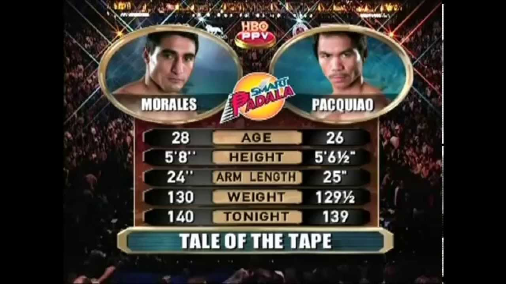

Justin Constance SD. Espejo
Erik Morales hitting the mitts in preparation with his second fight with Pacquiao.
Erik Morales, the pound for pound king at the time of this fight, was about to face
manny pacquiao for a rematch. Even though he won the first fight, he has not faced a
fighter like Pacquiao ever before as his speed and power proved to be a difficult
puzzle for the technical mexican champ. This is one of the reasons why the Morales
training camp had hired a new sparring partner by the name of Edwin Valero, a
fighter to this day, has many critics agreeing that he is one of the fighters that
closely resemble the Filipino boxer's style, using angles and speed and throwing
with real power.
Erik Morales spars with Edwin Valero to prepare for Manny pacquiao
Pacquiao in his stretching routine to prepare to train for his second fight with Erik Morales.
In this rematch with the Mexican champion, Pacquiao changed his training routine and
improved on his explosiveness and speed as head coach Freddie Roach claimed that
this would be the key to victory for the Filipino. Even though there was a headbutt
in the first fight which contributed to Pacquiao's performance, strength and
conditioning coach Justin Fortune explained that they should be ready for all
possible situations and has made a rigorous and demanding workout routine for Manny
so that he'll be ready for all of these situations with morales in their second
confrontation.
Freddie Roach and Manny Pacquiao Training for Erik Morales in the Wild Card Gym
Morales(left) and Pacquiao(right) pose for the weigh-in
The Tale of the Tape as shown by HBO pay-per-view
Manny Pacquiao vs Erik Morales 2 shown by SkySports